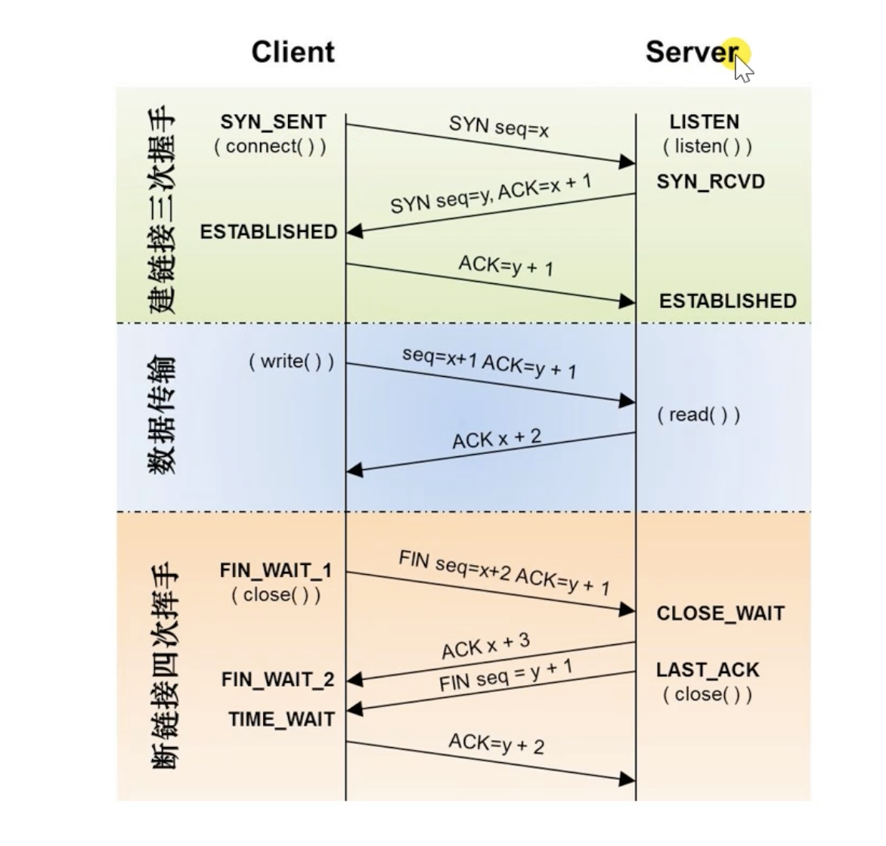
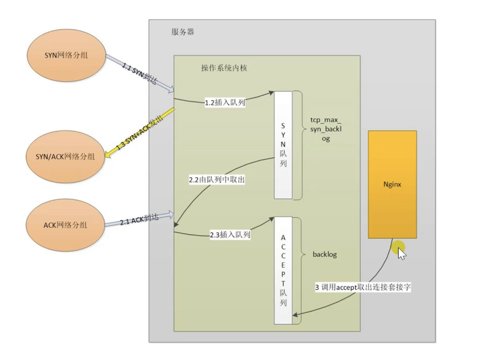
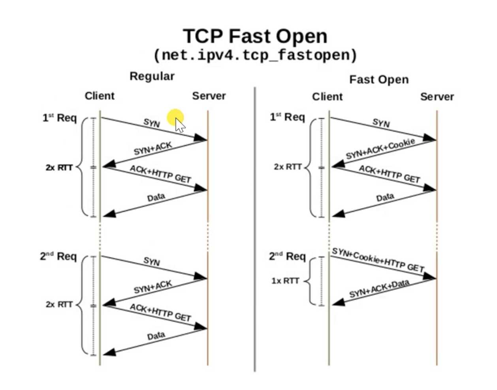
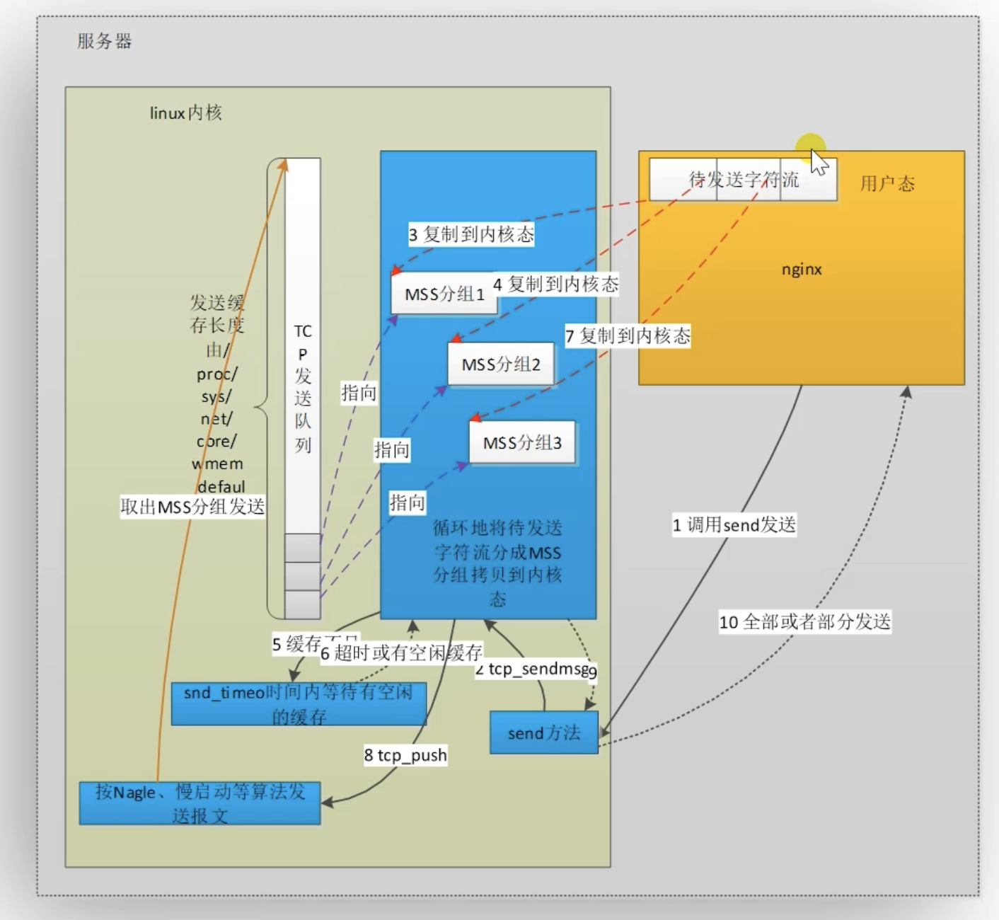
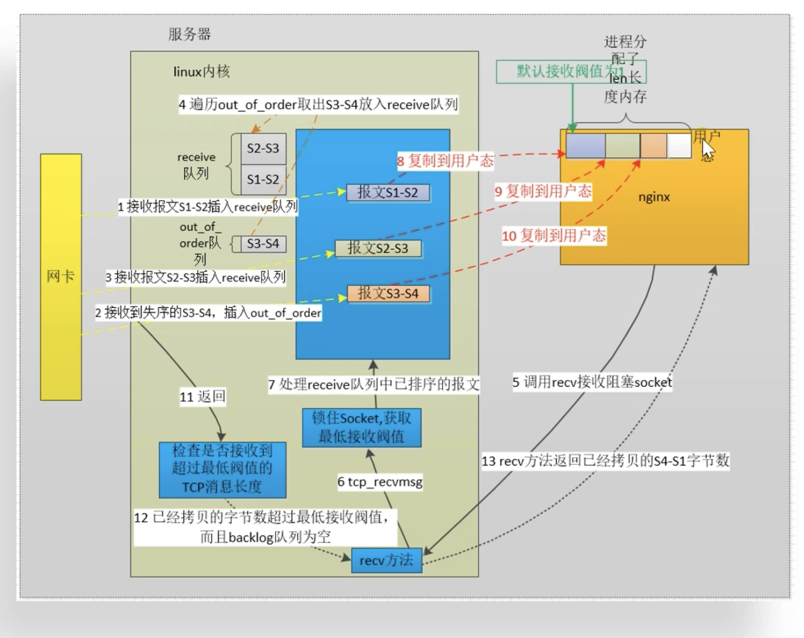
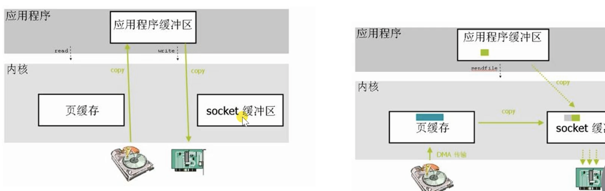

5. nginx优化
5.1. 优化方法论
软件方面提升使用率
硬件提升
使用dns
5.2. 如何有效使用CPU
能够使用全部的CPU资源
work进程数量大于等于cpu number .
master worker 多进程架构
nginx进程不做无用功浪费CPU
不应该争抢cpu,worker进程数量大于等于cpu合数。
不应该调用第三方模块让出cpu
nginx不被其他进程抢用
提升优先级
减少非nginx进程存在
5.2.1. 设置worker进程的数量
worker_processes: 设置数量，auto的话，自动和cpu数量保持一致。
5.2.2. 为何cpu可以同时运行多个进程
时间片分割，进程被分配时间片，微观上是串行的，宏观是并行的。
阻塞（读文件，网络）等会导致主动让出。
5.2.3. 确保处于运行态
5.2.4. 减少进程切换
主动切换： 阻塞api
被动切换： 时间片耗尽
5.2.5. 如何查看上下文切换
[zhaojiedi_dxm@instance-zj2zr2l1-15 conf]$ vmstat
procs -----------memory---------- ---swap-- -----io---- -system-- ------cpu-----
r b swpd free buff cache si so bi bo in cs us sy id wa st
4 0 0 824280 133348 123614624 0 0 8 115 0 0 8 4 87 0 0
[root@instance-dduk3gev-19 ~]# dstat
You did not select any stats, using -cdngy by default.
----total-cpu-usage---- -dsk/total- -net/total- ---paging-- ---system--
usr sys idl wai hiq siq| read writ| recv send| in out | int csw
8 4 87 0 0 0| 264k 3671k| 0 0 | 0 0 |3168 110k
# cswch/s 主动的，nv 被动的
[root@instance-dduk3gev-19 ~]# pidstat -w |head -n 10
Linux 3.10.0-957.21.3.el7.x86_64 (instance-dduk3gev-19.bcc-bjdd) 01/21/2022 _x86_64_ (32 CPU)
07:18:27 PM UID PID cswch/s nvcswch/s Command
07:18:27 PM 0 1 1.32 0.08 systemd
07:18:27 PM 0 2 0.32 0.01 kthreadd
07:18:27 PM 0 3 4.66 0.00 ksoftirqd/0
07:18:27 PM 0 5 0.00 0.00 kworker/0:0H
07:18:27 PM 0 7 0.22 0.00 migration/0
07:18:27 PM 0 8 0.00 0.00 rcu_bh
5.2.6. 什么决定cpu时间片的大小
nice优先级-20到19的。
o1调度算法优先级影响还是挺大的， 优先级对应的时间片可以在5ms-800ms的。
通过worker_priority 设置优先级。 也就是nice值。
5.3. 多核间如何负载均衡
5.3.1. 多队列网卡对多核cpu的优化
rss: 硬中断负载均衡
rps: 软中断负载均衡
rfs:
5.3.2. 提升cpu缓存命中率
worker_cpu_affinity: 设置cpu粘性。
查看cpu缓存
[root@instance-dduk3gev-19 ~]# cat /sys/devices/system/cpu/cpu0/cache/index{0,1,2,3}/size
32K
32K
1024K
11264K
5.4. 控制tcp握手参数
syn_sent 状态
net.ipv4.tcp_syn_retries=6 主动发送syn的重试次数
net.ipv4.ip_local_range = 32768 60999 建立连接时候的本地端口可用范围。
proxy_connect_time: 主动建立连接时间
syn_revd 状态
net.ip4.tcp_max_syn_backlog: syn_revd状态的最大个数
net.ipv4.tcp_synack_retries: 发送syn/ack的重试次数
服务器怎么处理三次握手
如何控制syn攻击
攻击者为准不同的ip地址的syn报文，快速占满backlog队列。
net.core.netdev_max_backlog: 接受自网卡，但是没有被内核协议栈处理的报文长度。
net.ipv4.tcp_max_syn_backlog: sync_rcvd状态的连接个数。
net.ipv4.tcp_abort_on_overflow: 超出处理能力对新来的syn直接回包RST，丢弃连接。
启用tcp_syncookies: 当syn队列满了，就不进入syn队列，计算cookie直接进入backlog队列。
5.5. 建立tcp连接的优化
5.5.1. 句柄的上限
操作系统级别
fs.file-max: 操作系统最大的句柄数
fs.file-nr: 当前分配和正使用以及上限。
用户级别
/etc/security/limits.conf
root soft nofile 65535
限制进程
# 限制work进程打开文件的个数
worker_rlimit_nofile number ;
# 限制work打开的连接个数
woker_connection number;
5.5.2. 队列长度
syn队列： net.ipv4.tcp_max_syn_backlog
accept队列： net.core.somaxconn
backlog=number: 应用级别的。
5.5.3. tcp fast open
net.ipv4.tcp_fastopen
0： 关闭
1： 作为客户端可以使用tfo
2: 作为服务端可以使用tfo
3: 都是用tfo
fastopen=number 可以防止携带数据的syn攻击，限制以最大长度。
5.6. 滑动窗口和缓冲区
5.6.1. 滑动窗口
- 功能：
限制连接的网速，解决报文乱序和可靠传输问题。通过操作系统内核实现。
- 发送窗口：
用于发送内容
- 接收窗口：
用于接收内容
5.6.2. 发送tcp消息
5.6.3. tcp接收消息
5.6.4. nginx的超时时间和滑动窗口
client_body_timeout: 2次读操作间的超时时间。
send_timeout: 2次写操作的超时时间。
proxy_timeout: 2次读或者2次写的超时时间。
5.6.5. 丢包重传
net.ipv4.tcp_retries1 = 3 达到上限后更新路由缓存。
net.ipv4.tcp_retries2 = 15 达到上限后关闭tcp连接
5.7. 优化滑动窗口和传输效率
5.7.1. tcp缓冲区
net.ipv4.tcp_rmem 设置读取缓冲区最小值，默认值和最大值。单位字节。
net.ipv4.tcp_wmem: 设置写缓冲区最小值，默认值和最大值。单位字节。
net.ipv4.tcp_mem: 系统无内存压力、启动压力模式阈值、最大值。单位为页的数量。
net.ipv4.tcp_moderate_rcvbuf=1: 开启自动调整缓存模式。
revbuf: 接受缓冲区大小
sndbuf: 发送缓冲大小
最大接受窗口应该=带宽x时延
5.7.2. nagle算法
避免一个连接上同事存在大量小报文。提升带宽利用率 tcp_nodelay on 禁用nagle算法。
postpone_output 不到足够大小不发送。
5.7.3. cork算法
仅仅针对sendfile on 开启时候生效，完全禁止小报文的发送，提升网络效率 tcp_nopush on 。
5.8. 慢启动和拥塞窗口
5.8.1. 流量控制
拥塞窗口： 发送端主动限制流量
通告窗口： 接受方限制流量
实际流量： 拥塞窗口和通告的最小值。
5.8.2. 拥塞处理
慢启动方式： 指数扩展拥塞窗口。
拥塞避免： 窗口大于threshold.
拥塞发生： 计算降低拥塞窗口。
快速恢复：
5.9. tcp keepalive
- 应用场景：
检测实际断掉的连接 用于维持与客户端间的防火墙有活跃网络包。
netipv4.tcp_keepalive_time: 发送心跳周期
net.ipv4.tcp_keepalive_intvl: 探测包发送间隔。
net.ipv4.tcp_keepalive_probes: 探测包重试次数。
so_keepalive= nginx的tcp keep alive参数指定。
5.10. 减少连接的timewait的状态数量
net.ipv4.tcp_orphan_retries: 发送fin的重试次数。
net.ipv4.tcp_fin_timeout: 保持在wait2的时间。
net.ipv4.tcp_tw_reuse=1 作为客户端可以服用tw的端口。
net.ipv4.tcp_timestamps :拒绝迟到的包
net.ipv4.tcp_tw_recycle 作为客户端和服务端都可以使用tw的端口。
net.ipv4.tcp_max_tw_buckets 设置最大数量超过就直接关闭了。
5.11. lingering_close 延迟关闭连接
nginx处理完成调用close关闭连接，可能会导致客户端收到rst忽略response.
lingering_close 会自动跟进实际情况关闭。
5.12. 应用层协议优化
ssl_session_cache: 定义共享内存，为所有worker进程提供session缓存服务，1mb可以使用4ksession。
5.13. tls/ssl中的会话票证
nginx将会话session的信息作为tickets加密发送给客户端，下次客户端发起请求tls连接的时候带上tickets，nginx解密验证后复用会话session.
ssl_session_tickets: 是否启用ssl tickets
ssl_session_ticket_key: 秘钥文件。
5.14. http长连接
减少握手次数
降低tcp拥塞控制影响。
5.15. gzip压缩
通过实时压缩http包体，提升网络传输效率。
gzip on 开启
gzip_types: 哪些类型压缩
gzip_min_length： 低于特定大小不压缩
gzip_disable ： 哪些不压缩。
gzip_proxied:是否压缩上游响应
5.16. 升级更高效的http2.0协议
5.17. 磁盘io的优化
优化读取
sendfile 0copy
内存盘ssd盘
减少写入
aio
增加日志级别
关闭access_log
压缩日志
syslog替代本地io
5.17.1. 直接io
当磁盘的文件大小超过特定size后，启用直接io可以避免磁盘页缓存中的copy消耗。
directio 是否开启
directio_alignment: 超过的大小。
5.17.2. aio
aio 是否启用
aio_write:
5.17.3. 定义线程池
适合静态集群
5.18. 减少磁盘读写次数
5.18.1. empty_gif模块
这是一个1x1的图片，大小43个字节。
5.18.2. 日志压缩
access_log 设置buffer flush等参数减少日志打印次数。
5.18.3. error_log日志输出到内存
开发环境中定位问题打开debug级别的日志，但对debug的级别大量日志引发的性能问题不能容忍，将日志打印到内存中。
5.18.4. sysylog
5.19. 零copy和gzip_static
如果磁盘文件需要压缩的话， 直接有同名.gz的文件响应给用户。
gunzip当客户端不支持gzip，磁盘有压缩文件的话，则解压缩并发送客户端。
5.20. tcmalloc
分配内存的性能更高。
并发能力高
减少内存碎片
编译时候指定 –with-ld-opt=-ltcmalloc –with-google_perftools_module
5.21. 使用google perf 分析
分析nginx哪些函数消耗的时间比较久。
5.22. statu模块监控nginx数据
stub-status可以通过http接口，返回实时的监控的nginx连接状态。